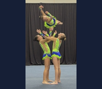

Acrobatic Gymnastics: Building Skills Together
By Oleg Leonov | Fall 2026

Acrobatic gymnastics brings partners together through coordinated movement. Balance work emphasizes control and steady positions; dynamic work adds flight and catches. Individual elements develop each gymnast's body control. With qualified coaching, athletes build foundations before progressing to more complex routines.